Personal Life
Welcome to the little world beyond my academic life. Here are some of the things I enjoy, the places I have explored, and the memories I have collected along the way.
Little Worlds, Big Adventures
I've always loved video games for the freedom they give us to explore different worlds, experience stories, and create things of our own. Sometimes I spend hours building a virtual home. Other times, I find myself completely immersed in a character's story.
Little Worlds, Carefully Built
I love experimenting with architecture, materials and decoration, creating small environments with their own atmosphere.
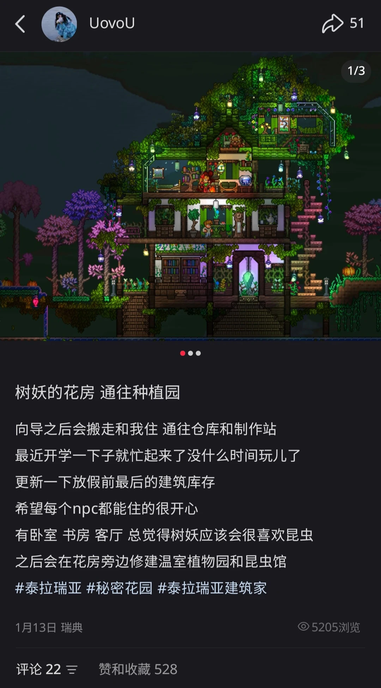
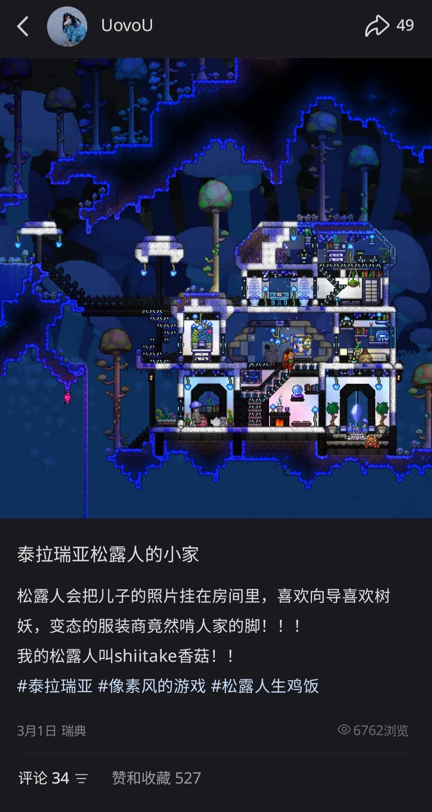
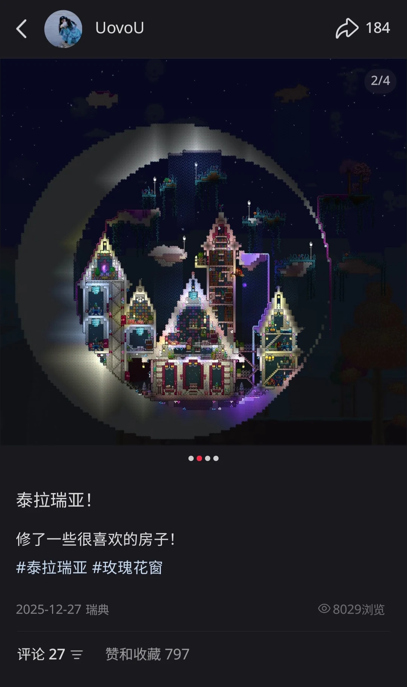
The Body's Metaphor
An Anthropological Interpretation of Astarion's Body in Baldur's Gate 3
My interest in Astarion inspired an anthropological reading of scars, embodiment, power and intimate bodily practice. The essay explores how bodily inscriptions and experiences affect a character's relationship with agency, recognition, and the self.
READ THE GAME ESSAY ↗Finding Joy in Movement
I love the feeling of moving with music, learning choreography, and sharing the energy of dancing with others. Here are a few memories from my dance practice and performances.

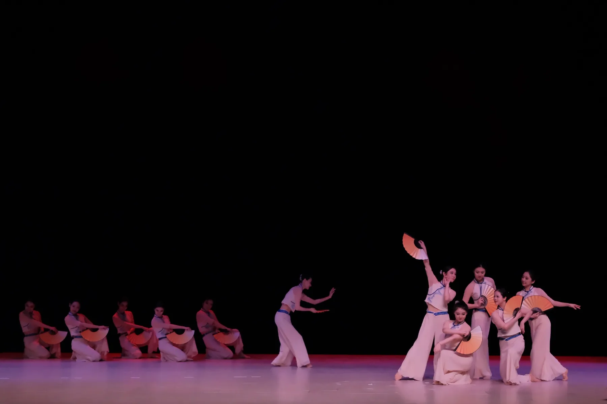
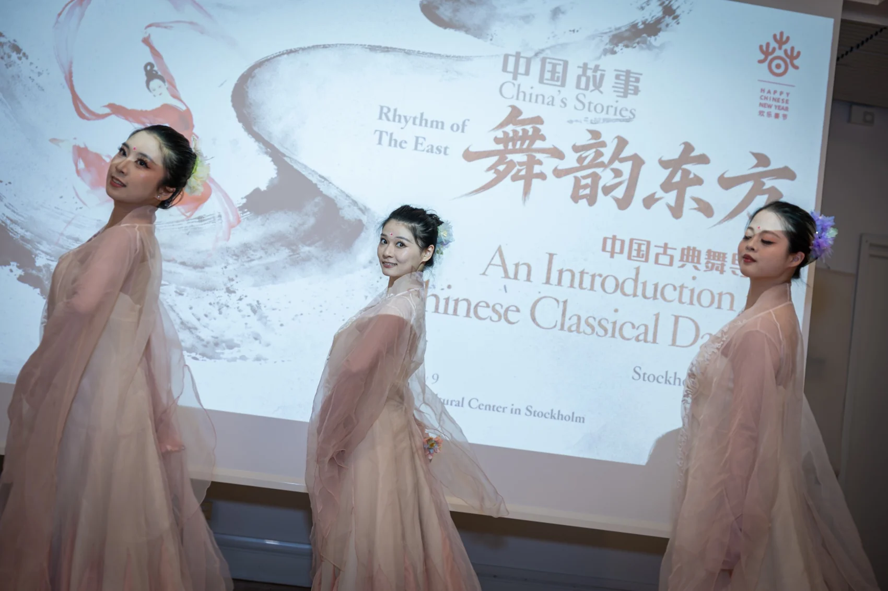
These photographs document group performances; individual performers are not identified here.
Through My Eyes
I love travelling with a camera and collecting the little details that catch my attention, from an unfamiliar street to a quiet architectural detail or a fleeting moment worth remembering.
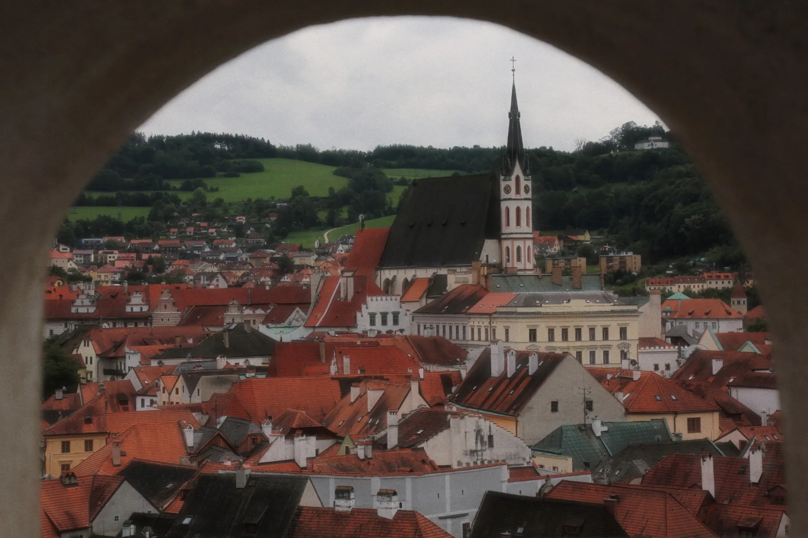

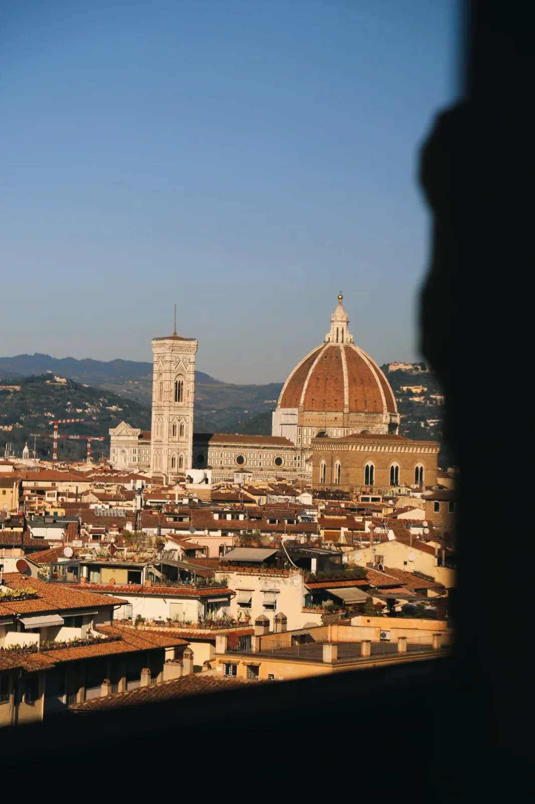
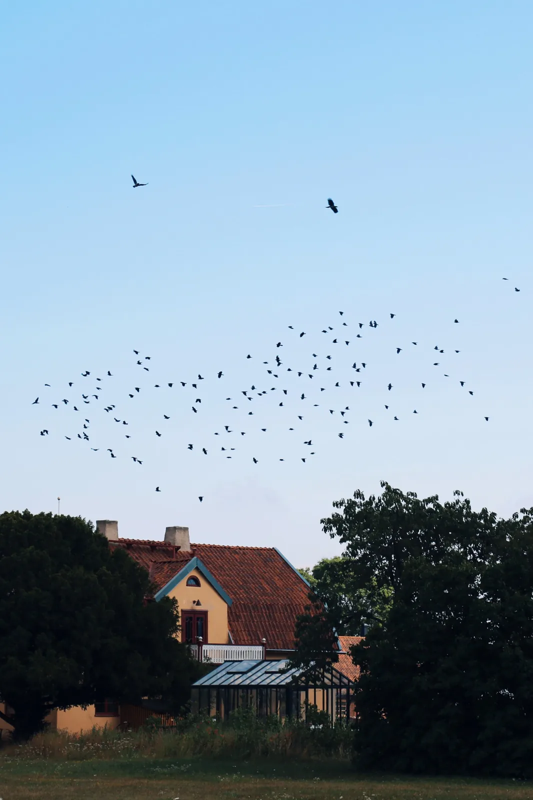
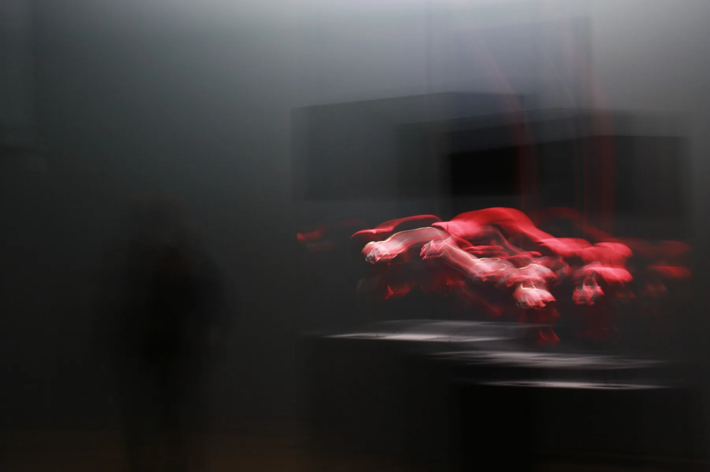
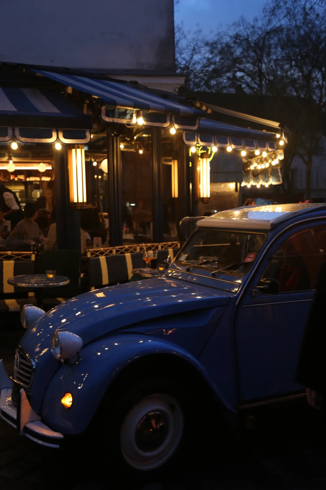
Made with Love
I enjoy creating little things with my hands, turning simple materials into delicate objects inspired by nature, colour and texture.

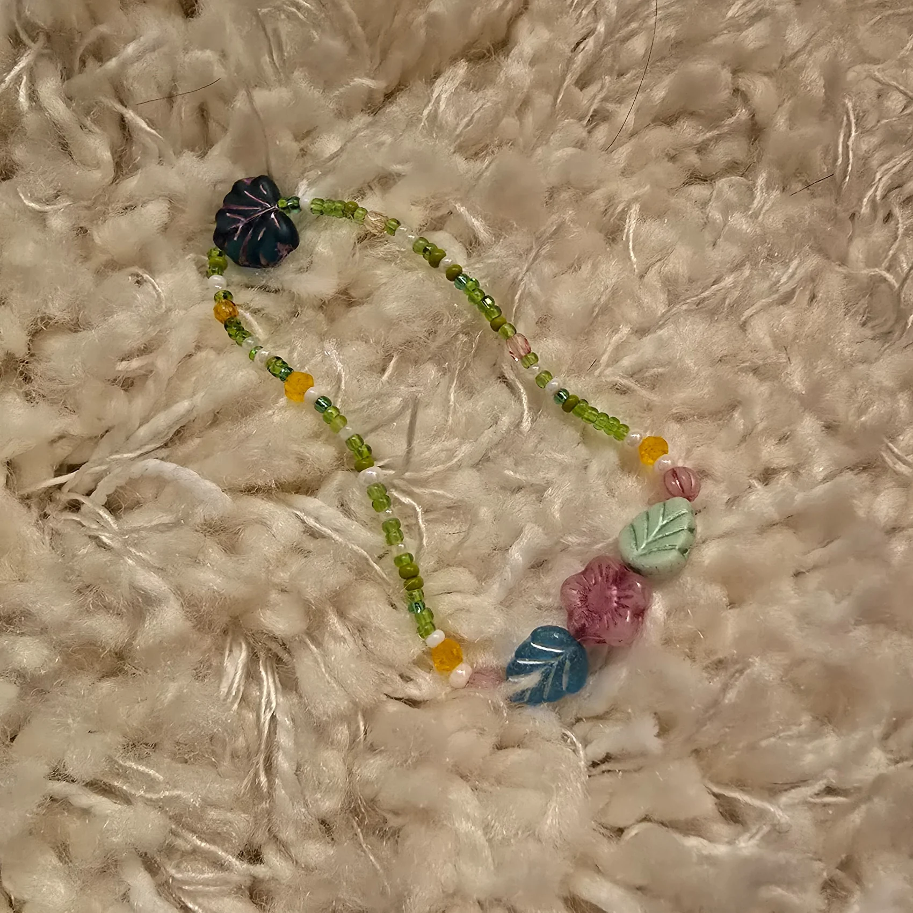
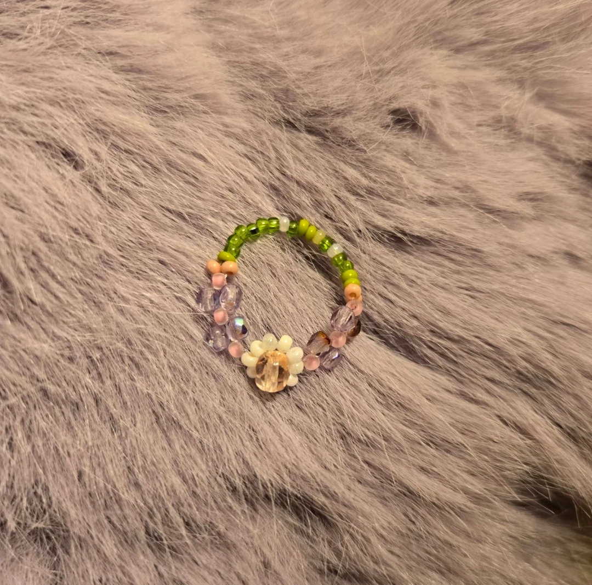
Good Times, Good Memories
Some of my favourite memories come from the people I have met and the experiences we have shared. Cultural traditions, celebrations, and gatherings are part of what makes life abroad memorable.